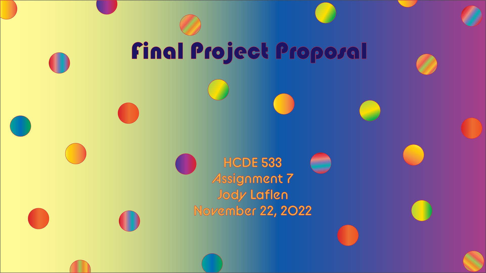

Assignment 1: Cardboard Catastrophe

Assignment 1 was supposed to be a pumpkin.
|
Assignment 2: Jumpy with Grasshopper

Assignment 2 used grasshopper to make 3D pieces to interlock into an abstract sculpture.
|
Assignment 3: Getting Started with 3D Printing
(Or How I Learned to Stop Printing in 2D and Started 3D Printing All The Things)

Assignment 3 was an exercise in assembling the Ender-3 Pro printer, learning how to level test,
and then, using Rhino and Cura, figure out how to print a series of shapes with specific parameters.
|
Assignment 4: Utter Chaos (a.k.a. Subtractive Manufacturing)

While everything in this assignment that could go wrong did, I managed to struggle through with a sort of box.
I went to the Mill twice to try my box pattern on the CNC mill, but could not get things to work out, so I resorted to the 3D printer due to lack of time.
|
Assignment 5: Meshing Around
This was a fun assignment, downloading and playing with different mesh objects and mesh types before deciding on what pairing
I wanted to make and print. I ran into some problems when I had to figure out how to fix the extruder and replace the nozzle, but I did that, too!
|
Illuminating the World Around Me (Making a Lamp) PLUS Molding and Casting Part 1

Maybe I will never be a lampmaker, but I made a lamp. This is my journey of getting meshy and learning
a vast amount about desgining mesh and components, measuring, print settings, and patience.
|
Assignment 6: Molding and Casting Part 2

In this second part of Molding and Casting Project, I was able to fix my 3D
printed mold and move on to finish the project.
|
Assignment 7: Final Project Proposal

In this exciting installment, I will present my Exciting Final Project Proposal!
|
Assignment 8: Final Project: Tinkertoys!

The Final Project is Here: My Custom Set of Tinker Toys!
|